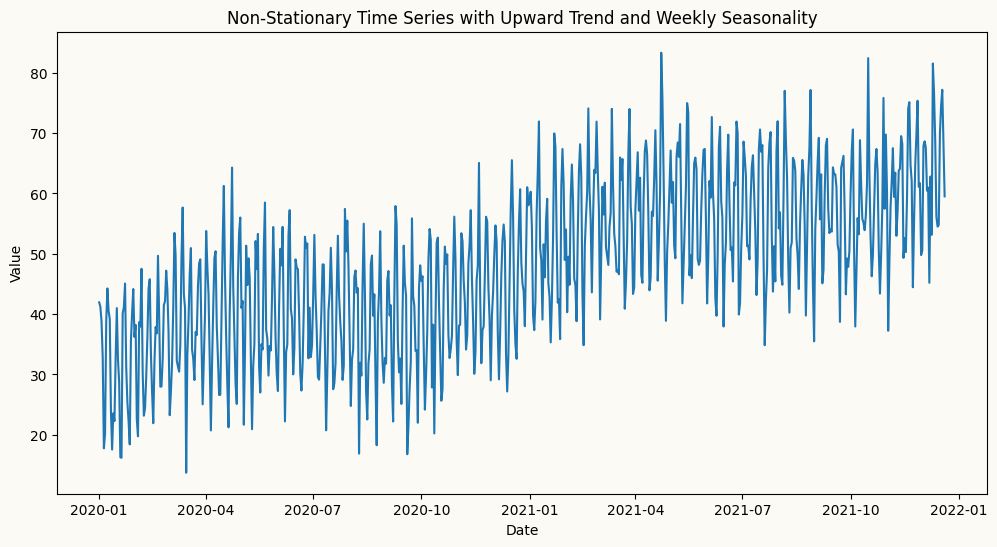
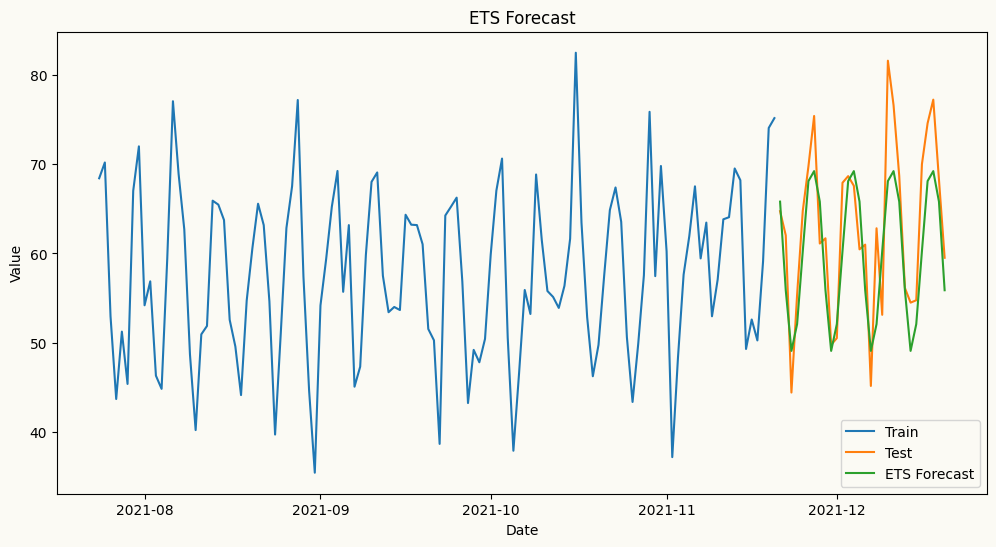

The table below lists the models along with their descriptions and usage examples.
Univariate forecasters
Models
Description
Usage Example
Naive Forecaster
A simple forecasting model that uses the last observed value or last seasonal value as the forecast.
from peshbeen.models import naive model = naive(target_col=‘target column name’, season_period=None) model.fit(df) forecasts = model.forecast(H=10)
ETS (Exponential Smoothing state space models)
ETS forecaster that wraps the statsmodels implementation, allowing for easy integration and forecasting.
from peshbeen.models import ets model = ets(target_col=‘target column name’, trend=‘add’, seasonal=‘add’, seasonal_periods=12, smoothing_level=0.1, smoothing_trend=0.1, smoothing_seasonal=0.1) model.fit(df) forecasts = model.forecast(H=10)
ARIMA (AutoRegressive Integrated Moving Average)
ARIMA — a fast, familiar forecaster backed by Nixtla’s statsforecast implementation, the fastest ARIMA in Python.
from peshbeen.models import arima model = arima(target_col=‘target column name’, order=(1, 1, 1)) model.fit(df) forecasts = model.forecast(H=10)
Machine Learning Regressors — any scikit-learn-compatible regressor, from LinearRegression, RandomForest and AdaBoost to XGBoost, LightGBM, and CatBoost.
A unified forecasting wrapper for any compatible regression model.
from peshbeen.models import ml_forecaster from sklearn.ensemble import RandomForestRegressor model = ml_forecaster(target_col=‘target column name’, estimator=RandomForestRegressor(n_estimators=100)) model.fit(df) forecasts = model.forecast(H=10)
Models time series with hidden regime changes (e.g. recession vs. growth, low vs. high volatility) using autoregressive dynamics and optional exogenous variables.
from peshbeen.models import ms_arr model = ms_arr(target_col=‘target column name’, n_components=2, lags = 2, n_iter=100) model.fit(df) forecasts = model.forecast(H=10)
Multivariate forecasters
Models
Description
Usage Example
VAR (Vector AutoRegression)
A pure-NumPy multivariate forecaster that models linear interdependencies across multiple time series, with per-series lag structure control.
from peshbeen.models import var model = var(target_cols=[‘target column 1’, ‘target column 2’], lags={‘target column 1’: 2, ‘target column 2’: [1, 2, 7]}) model.fit(df) forecasts = model.forecast(H=10)
Machine Learning Regressors (multivariate) — any scikit-learn-compatible regressor, from LinearRegression and RandomForest to XGBoost, LightGBM, and CatBoost.
Forecasts multiple series simultaneously by leveraging interdependencies among them, using any scikit-learn-compatible regressor.
A multivariate extension of MS-ARR that models multiple time series with hidden regime changes using vector autoregressive dynamics and optional exogenous variables.
Stationarity is a fundamental concept in time series analysis that refers to the statistical properties of a time series being constant over time. A stationary time series has a constant mean, variance, and autocorrelation structure, which allows for more reliable modeling and forecasting. Non-stationary time series, on the other hand, exhibit trends, seasonality, or changing variance, making them more challenging to model accurately.
Why is stationarity important?
Many forecasting models, especially traditional statistical models like ARIMA and Machine Learning Regressors, assume that the underlying time series is stationary. If the data is non-stationary, these models may produce biased or inaccurate forecasts. By ensuring stationarity through techniques like differencing and detrending, we can improve the performance of these models and obtain more reliable forecasts.
The time series below is non-stationary, with an upward trend and weekly seasonality. We will use this time series to demonstrate how to apply different forecasting models, such as ETS, ARIMA, and Machine Learning models.
import pandas as pdimport numpy as npimport matplotlib.pyplot as pltdate_range = pd.date_range(start='2020-01-01', periods=720, freq='D')# create a non-stationary time series with an upward trend weekly seasonality, yearly seasonality and some noisenp.random.seed(42)data =30+0.05* np.arange(720) +12* np.sin(2* np.pi * date_range.dayofyear /7) +5* np.sin(2* np.pi * date_range.dayofyear /365) + np.random.normal(0, 5, 720)time_series = pd.DataFrame(data, index=date_range, columns=['Value'])plt.figure(figsize=(12, 6))plt.plot(time_series.index, time_series['Value'], label='Non-Stationary Time Series')plt.title('Non-Stationary Time Series with Upward Trend and Weekly Seasonality')plt.xlabel('Date')plt.ylabel('Value')plt.show()

Here, we forecast the same series using multiple models — starting with ETS, which handles non-stationary data natively, then ARIMA and ML regressors, where peshbeen’s built-in detrending and transformation pipeline takes care of stationarity automatically.
/Users/aslanm/Desktop/my_desk/peshbeen/.venv/lib/python3.14/site-packages/hyperopt/atpe.py:19: UserWarning: pkg_resources is deprecated as an API. See https://setuptools.pypa.io/en/latest/pkg_resources.html. The pkg_resources package is slated for removal as early as 2025-11-30. Refrain from using this package or pin to Setuptools<81.
import pkg_resources

ARIMA Example
Arima automatically applies differencing to make the series stationary by specifying the order of differencing (d) in the model parameters. In this example, we set d=1 to apply first-order differencing, which helps to remove the trend and make the series stationary for ARIMA modeling. To guide lag selection, we can also visualize the ACF and PACF plots of the original series to identify the ideal number of autoregressive (p) and moving average (q) terms for the ARIMA model. The ACF plot helps to identify the number of MA terms, while the PACF plot helps to identify the number of AR terms. As shown in the plots below, the ACF plot exhibits a slow decay, indicating non-stationarity, while the PACF plot shows significant spikes at lags 1 and 2, suggesting that an AR(2) model may be appropriate for the ARIMA model.
As shown in the plot above, the forecasts from the ARIMA model without differencing are underforecasting the upward trend in the data, resulting in forecasts that are significantly lower than the actual values. This highlights the importance of applying differencing to achieve stationarity when using ARIMA models, as it allows the model to capture the underlying patterns and trends in the data more effectively, leading to more accurate forecasts. Now, let’s see how the forecasts look when we apply differencing for ARIMA.